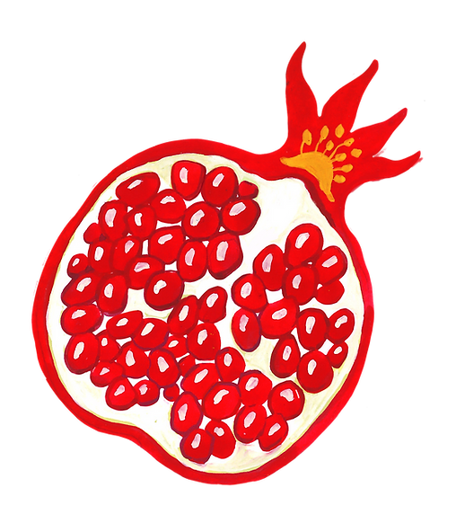
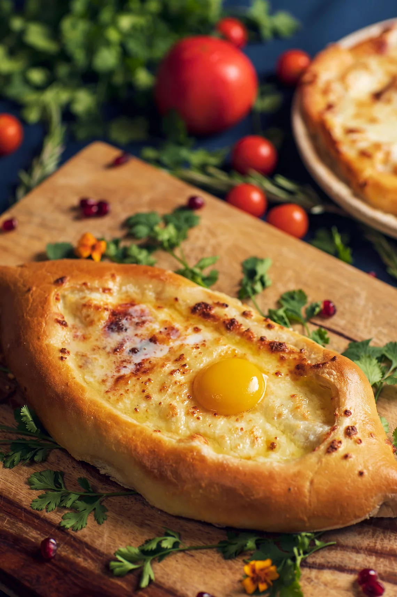

We Support Ukraine

Jaeri Georgian Food and Wine Experience
A recipe has no soul. You as the cook, must bring soul to the recipe. Georgia, not the state, the country. Delicious food is best served with wonderful friends.